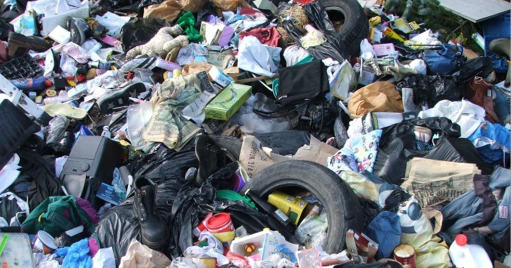

Вывоз ТБО и промышленного мусора
Какой же мусор может быть отнесен к ТБО или твердым бытовым отходам?
Мусорные мешки, которые накапливаются в результате жизнедеятельности индивидуума, как правило, состоят из мелкого бытового мусора, остатков пищи представляет собой самых распространенный тип. К этой же категории можно отнести и пластиковые и стеклянные бутылки. Домашние хозяйства часто избавляются от пластиковых изделий крупных размеров. Картонные коробки, которые накапливаются в большом количестве также подлежат утилизации. Макулатура и любые материалы состоящие из бумаги также относятся к этому типу мусора.

Почему же утилизация твердых бытовых отходов - это важная тема и их правильная утилизация должна являться повесткой для каждого человека, а не только для компаний.
Человечество ежедневно оставляет после себя огромное количество бытовых отходов, которые является побочным эффектом нашей жизнедеятельности. Объемы ТБО, в настоящее время, растут с геометрической прогрессией.
Наша компания занимается вывозом и утилизацией твердых бытовых отходов.
На первом этапе мы принимаем все Ваши условия (объемы вывоза, частота вывоза, районы), далее мы осмечиваем все усилия, которые необходимо применить для достижения поставленных задач. На последнем этапе мы выстаиваем стратегию, в которую входит разметка календаря вывоза (часы, районы, дни и частоту). Далее мы заключаем с Вами договор на вывоз мусора. Мы размещаем мусорные контейнеры на указанной территории. Специально обученный эксперт производит анализ состава мусора на месте с последующей его погрузкой нашим специалистом или Вашими рабочими.
При выборе подрядчика для такого типа работ наша корпорация обладает рядом очевидных конкурентных преимуществ:
гибкая политика работы компании, при которой самые изощренные условия являются приемлемыми для нас;
клиентский сервис высшего уровня. Наши аккаунт-менеджеры готовы предоставлять Вам отчеты о текущем статусе работ и по факту проделанной работы;
специально обученные эксперты, которые прошли заграничные стажировке и полностью компетентны в вопросах утилизации отходов;
парк современной техники, которая готова 24 часа обслуживать Ваши заказы. Наши погрузочные машины оснащены последними технологическими устройствами, которые способны эффективно осуществить погрузочно-транспортировочные работы.
Почему не стоит накапливать неумеренное количество ТБО и мелких бытовых отходов?
Мусор, который хранится в ненадлежащем месте со временем начинает декомпозироваться, гнить, выделять токсины, распадаться на опасные химические соединения и попадать в воздух, почву, грунтовые воды. Мы едим овощи и фрукты выращенные в этой земле, мы пьем эту воду, мы дышим этим воздухом. Если мы не будет соблюдать простые правила социальной ответственности (social responsibility) и не следовать принципам устойчивого развития (sustainable development), то мы разрушим будущее следующих поколений. Если эти предложения что-то значат для Вас, то не сбрасывайте бытовой мусор в лесу, посреди улицы или на дачных помойках. Доверьте работу по вывозу и утилизации нашей корпорации.
Отдельные замечания и комментарии касательно вывоза ТБО и промышленных отходов.
Мы готовы заключить контракт с Вами, невзирая на юридический статус (Вы можете быть как индивидуальным предпринимателем, мелким бизнесом, физическим лицом или же крупной корпорацией).
Наша организация предлагает гибкие условия коллаборации, предусматривая как единичные вывозы ТБО с Вашей территории, так и вывоз с заранее установленной периодичностью.
Место вывоза мусора (отходов). Мы производим вывоз как из торговых центров, так и из школ, детских садов, лагерей, пансионатов, театров, спортивных комплексов и административно-деловых комплексов.
Наша компания преследует транспарентность как современный инструмент здоровой конкуренции. У нашей компании заключены официальные договора с всеми Подмосковными свалками (Тимохово, Торбеево, Кучино) не только на свал мусора, а также на его правильную технологическую утилизацию, которая соответствует всем стандартам экологической и санитарной безопасности. Мы проводим экспертизы добросовестности работы свалок на предмет утилизации Вашего мусора и являемся активными пропонентами политики честного бизнеса.
Вывоз мусора без задержек - это в первую очередь ответственное отношение бизнеса к окружающей среде. Очищенная от мусора территория служит показателем отношения бизнеса к остальным. Если Вы хотите сохранить бизнес имидж и поддержать стандарты корпоративной социальной ответственности, то настоятельно просим Вас своевременно обращаться к нашей компании за услугой вывоза ТБО и промышленного мусора.
Промышленные отходы
Поговорим о вывозе промышленного мусора и всеми релевантными вопросами, которые возникают у компании, когда встает вопрос утилизации отходов такого типа.
Как и в прошлых профессиональных статьях, мы начнем с категоризации типов промышленного мусора. Мусор такого типа - это прежде всего предмет повышенной опасности.
Промышленные отходы делятся на несколько категорий в зависимости от степени опасности (токсичности, взрывоопасности). Также такие отходы могут быть перерабатываемыми с последующим использованием в других целях или же не подлежать дальнейшим переработкам, в принципе. Физического состояние такого мусора также может разнится и быть как твердым и так и ликвидным (жидкое физическое состояние).
Наша компания специализируется на вывозе твердых промышленных отходов
Далее мы постараемся дать Вам доступное для понимания определение промышленных отходов. Это такой тип отходов, которые образуются в результате любой промышленной деятельности. Это могут быть оставшиеся материалы, которые уже не несут полезных свойств и не представляют коммерческого интереса для компаний.
Поскольку темпы развития промышленности носят прогрессивны характер (производственные мощности удваиваются ежегодно), объёмы промышленных отходов растут прямо пропорционально с наращиванием производственных мощностей.
Ярым примером промышленных отходов является мусор образовавшийся после строительства зданий или сноса оных. В частности, это деревянные конструкции, сломанные бетонные блоки, бракованные строительные материалы, коробки и упаковки от строительных материалов, стальные и металлические детали, остатки демонтажа и сноса.
Эта информация предоставлена для образовательных и ознакомительных целей.
Все дополнительные вопросы касательно утилизации промышленного мусора и ТБО Вы можете получить, проконсультировавшись с нашим экспертом по утилизации и экспертизе мусора.